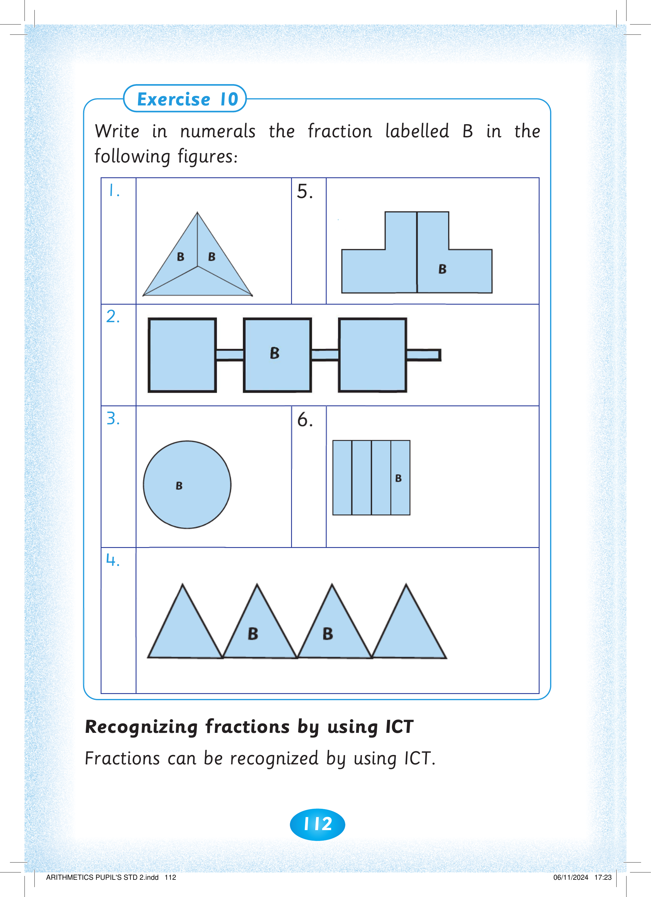
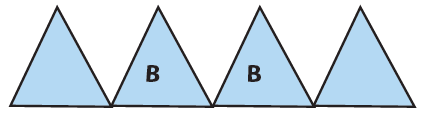

112


Exercise 10. Write in numerals the fraction labelled B in the following figures. 1. A triangle is divided into three equal parts, with B marked in two parts. 2. Three equal squares are joined in a row, with B in the middle square. 3. A complete circle is labelled B. 4. Four equal triangles are in a row, with B marked in the two middle triangles. 5. A step-shaped figure is divided into two equal parts, with B in the right half. 6. A rectangle is divided into four equal vertical parts, with B in the last part on the right.

Write in numerals the fraction labelled B in the

following figures:
1.

5.

2.

3.

6.

4.

Recognizing fractions by using ICT. Fractions can be recognized by using ICT.
Fractions can be recognized by using ICT.


ARITHMETICS PUPIL'S STD 2.indd 112
06/11/2024 17:23